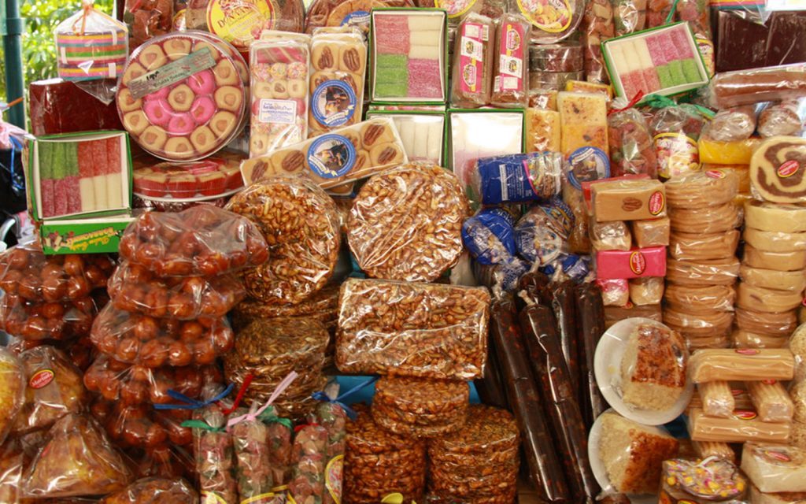

BLSM conecta dulcerías familiares de distintas regiones de México con quienes extrañan el sabor de casa. Elaboramos y distribuimos dulces típicos entre estados, cuidando receta, empaque y frescura en cada envío.
Recetas heredadas por familias dulceras, elaboradas en pequeños lotes con ingredientes naturales de cada región.
Comercio interestatal directo: empacamos para viajar y llegamos a los 4 estados disponibles en pocos días.
Cada lote se revisa antes de salir del obrador, garantizando frescura y el sabor original de origen.
Cuéntanos qué dulce buscas y de qué estado. Te confirmamos disponibilidad y tiempo de entrega por correo.